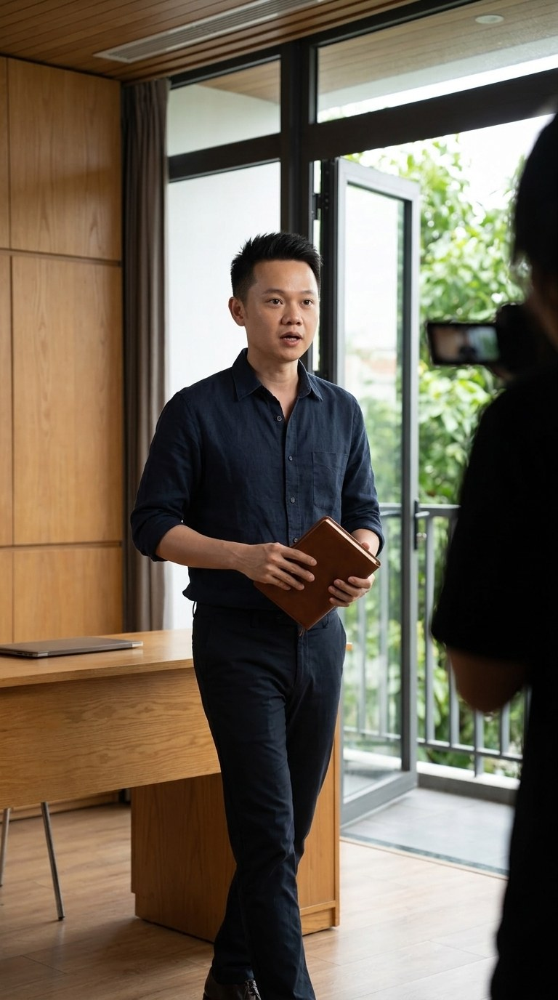
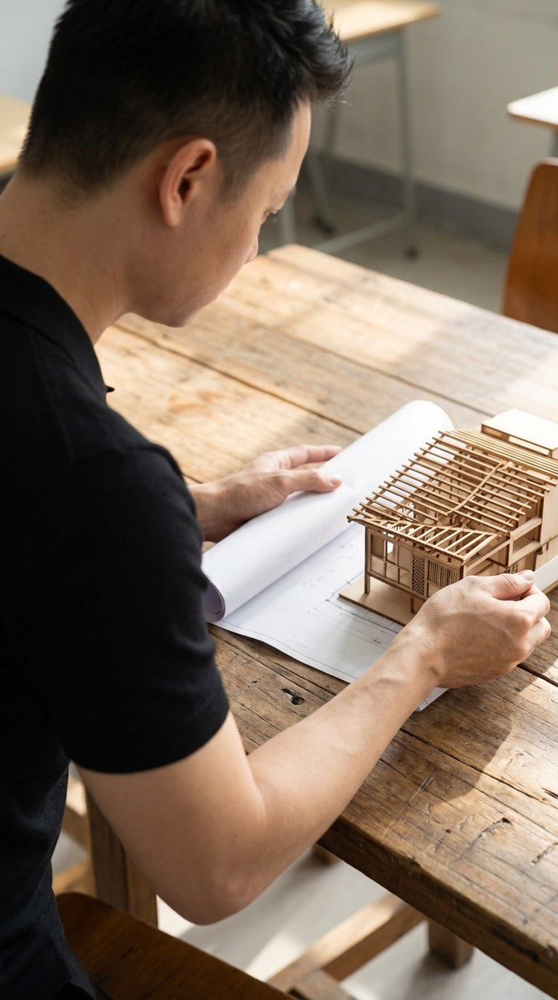
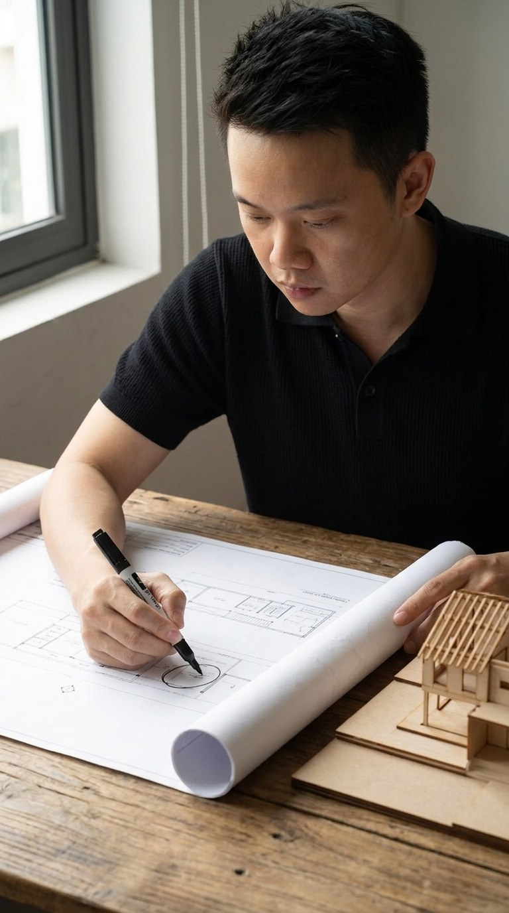
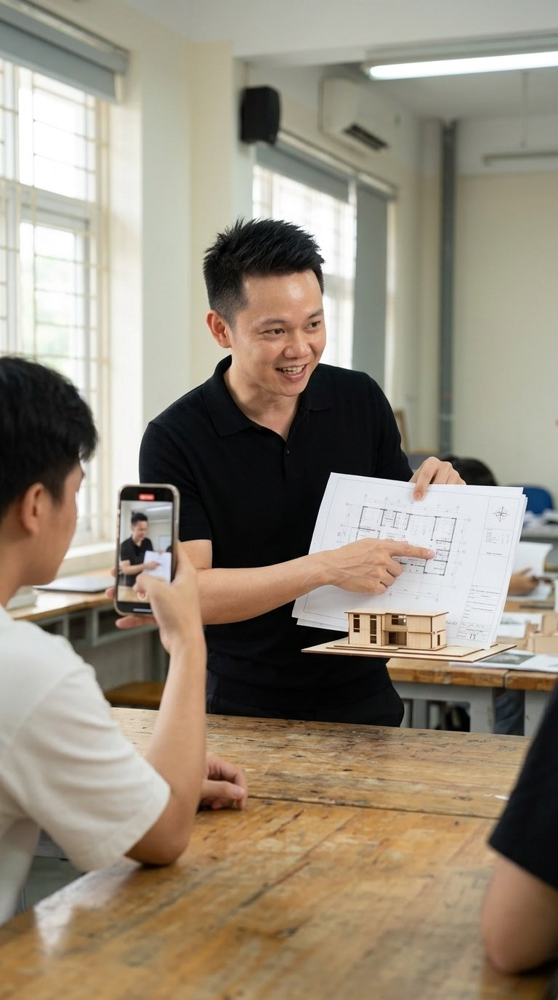
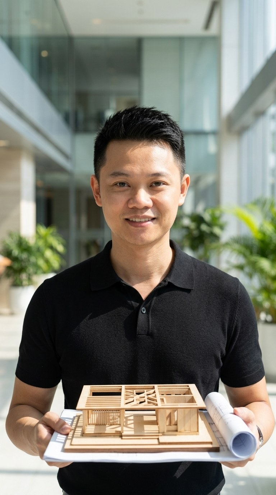
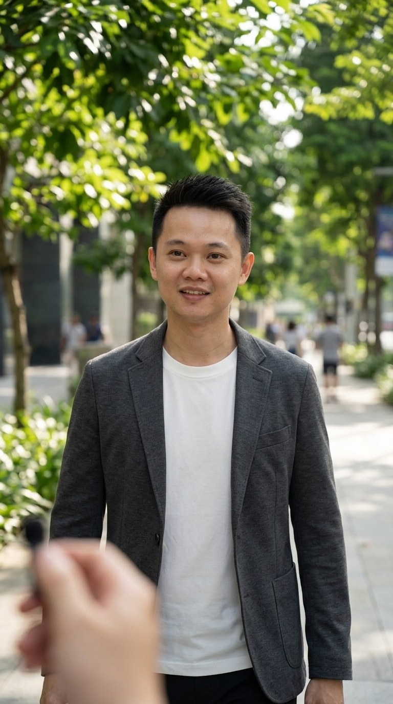
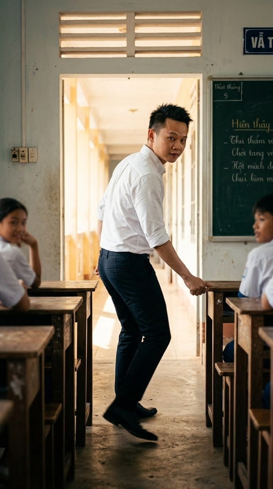
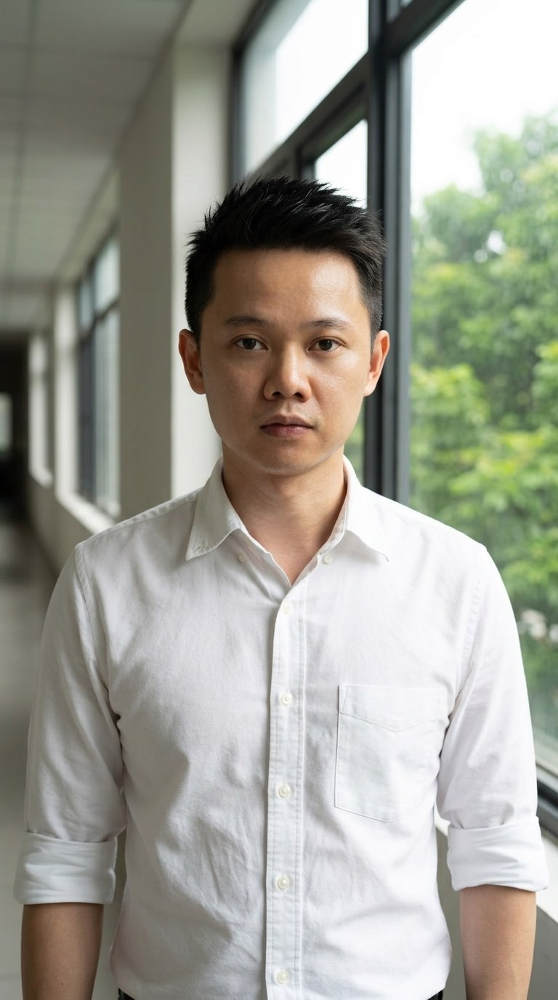
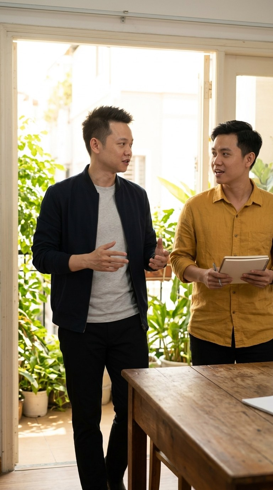

5 Bài Tập Thực Hành Walk & Talk + Talking Head
Thay vì tự cầm điện thoại đứng một mình độc thoại dễ gây cứng mặt, trang thực hành này chia học viên thành Nhóm 2 Người (Người A lên hình cầm vật thật × Người B cầm máy hỏi mồi). Toàn bộ 5 bài tập dưới đây được trang bị đầy đủ 25 ảnh hướng dẫn góc quay 9:16 (5 cú máy/bài như bài tập Voice-Over) và 25 kịch bản thật từ học viên lớp K3 — bất kỳ ngành nghề nào cũng chỉ cần thay từ vào là bấm máy quay được ngay tại bàn học, hành lang hoặc ngoài trời.
0. Nguyên tắc phối hợp Nhóm 2 Người & 4 Góc Bối Cảnh Tại Lớp K3
Khi một học viên vừa phải tự giơ điện thoại canh khung hình, vừa phải nhớ lời thoại, mắt sẽ tự động liếc sang màn hình và gương mặt lập tức cứng ngắc. Giải pháp thực chiến hiệu quả nhất tại lớp là chia cặp 2 người khác ngành nghề để hỗ trợ nhau theo 4 quy tắc vàng sau:
| Quy tắc thực hành | Người A (Người lên hình & Kể chuyện nghề) | Người B (Đạo diễn cầm máy & Hỏi mồi) |
|---|---|---|
| 1. Tách đôi việc để hết gượng | Không cần lo căn khung hình. Tay luôn cầm 1 vật thật (sổ tay, bản vẽ, kéo, sản phẩm), mắt nhìn Người B trò chuyện như hai người bạn. | Cầm điện thoại 2 tay giữ khung ngực–đầu (góc 1x), đặt câu hỏi mồi bằng giọng tự nhiên để kích hoạt phản xạ nghề của A. |
| 2. Nhịp cắt 5–8 chữ / cú máy | Mỗi cú máy chỉ nói đúng 1 câu ngắn (4–6 giây) rồi dừng. Tuyệt đối không cố học thuộc cả bài dài 30 giây. | Bấm quay trước khi A mở lời 1 giây, và chỉ bấm dừng sau khi A đã kết thúc câu hoặc bước qua vị trí mới 1 giây. |
| 3. Linh hoạt Trong nhà & Ngoài trời | Đổi từ Ngồi bàn gỗ lớp K3 (Tĩnh) sang Đứng dậy bước ra ban công / vỉa hè (Động) ở giữa bài để thả lỏng cơ thể. | Khi ở trong nhà ưu tiên hướng mặt A về phía cửa sổ 45°; khi ra ban công/ngoài trời ưu tiên đứng dưới bóng râm tán cây để ánh sáng dịu đều. |
| 4. Đổi vai trong 15 phút | 7 phút đầu: A lên hình hoàn thành đủ 5 cú máy (Shots 1→5) của bài tập đã chọn. | 7 phút tiếp theo: Đổi vai B thành A. Kết thúc 15 phút, cả hai người đều có trọn vẹn 5 file video thô để đưa vào CapCut dựng ngay. |
01.1. Mục tiêu cảm xúc & Phối hợp Nhóm 2 Người (Trong Nhà & Ngoài Trời)
| Trục thiết kế sư phạm | Giải phẫu chi tiết giúp học viên quay tự nhiên ngay lần đầu |
|---|---|
| Mục tiêu cảm xúc | Người xem cảm nhận được một con người thật có câu chuyện và lý do làm nghề rõ ràng, chứ không phải một lời chào bán hàng. |
| Vì sao hết gượng ngay tại lớp | Ngồi tại bàn gỗ là tư thế quen thuộc nhất để nói câu đầu tiên. Khoảnh khắc đứng dậy bước ra cửa sổ/ban công ở câu số 3 giúp cơ thể thả lỏng hoàn toàn sự căng cứng. |
| Vật đạo cụ bắt buộc | 1 món đồ nghề thật đang có trong túi (cây kéo, cuốn sổ ghi chép khách, cuộn thước, bộ hồ sơ, chiếc khuôn bánh, điện thoại...). |
Người A (Lên hình): Ngồi tại bàn gỗ lớp K3, đặt vật thật xuống mặt bàn ở Shot 1. Nhìn vào mắt Người B để kể câu số 2. Đứng dậy bước về phía cửa sổ/ban công ở Shot 3–4 và dừng lại nhìn thẳng ống kính ở Shot 5.
Người B (Cầm máy & Hỏi mồi): Cầm điện thoại góc 1x ngồi đối diện quay cận tay (Shot 1) và qua vai (Shot 2). Hỏi mồi nhẹ nhàng: "Vì sao anh/chị lại gắn bó với nghề này?". Khi A đứng dậy, B cầm máy đi lùi giữ khoảng cách 1.2m dẫn A ra ban công.
🏠 Biến thể Trong nhà: Bắt đầu tại bàn gỗ dài lớp K3 Greenhub → Đứng dậy bước dọc dãy bàn gỗ về phía khung cửa kính lớn hoặc hành lang sáng.
🌿 Biến thể Ngoài trời: Bắt đầu từ bậc cửa lớp học → Đẩy cửa bước hẳn ra ban công cây xanh (hoặc đi bộ dưới hàng cây vỉa hè tầng 1) và dừng lại tựa lan can.
01.2. Bộ 5 Ảnh Mô Tả Hướng Dẫn Quay 9:16 (Bấm vào từng ảnh để phóng to)
Giống như hệ thống bài tập của Định dạng 01 (Voice-Over), mỗi bài thực hành Walk & Talk được chia làm 5 cú máy (Shots) đổi đồng thời 3 trục: Cỡ cảnh, Góc máy và Hướng máy. Người B chỉ cần cầm điện thoại nhìn đúng 5 khung hình mẫu dưới đây để bấm máy cho Người A:
| Cỡ cảnh | Cận cảnh (Close-Up) |
| Góc máy | Ngang mặt bàn (15°) |
| Hướng máy | Hướng thẳng vào tay & vật |
| Nhóm 2 người | A đặt vật xuống bàn • B giữ máy tĩnh cách 40cm |
| Cỡ cảnh | Trung cận (MCU) |
| Góc máy | Ngang tầm mắt |
| Hướng máy | Chếch 30° qua vai Người B |
| Nhóm 2 người | B hỏi mồi câu đầu • A nhìn mắt B kể tự nhiên |

Bung động (Walk) 10.0s – 16.0s| Cỡ cảnh | Trung cảnh rộng (Medium Wide) |
| Góc máy | Hơi thấp (Low-angle nhẹ) |
| Hướng máy | Máy đi lùi trước mặt A |
| Nhóm 2 người | A cầm sổ đứng dậy bước • B cầm máy lùi đều |
| Cỡ cảnh | Trung cảnh (MS) |
| Góc máy | Ngang ngực |
| Hướng máy | Bám cạnh sườn 45° |
| Nhóm 2 người | A bước chậm ngoài ban công • B đi song song |
| Cỡ cảnh | Trung cận (MCU) |
| Góc máy | Trực diện ngang mắt |
| Hướng máy | Chính diện xóa phông cây xanh |
| Nhóm 2 người | A dừng hẳn nhìn thẳng lens • B giữ máy tĩnh 2s cuối |
01.3. Bảng Phân Cảnh Chi Tiết (Shot-by-Shot Storyboard)
| Cú máy & Thời lượng | Cỡ cảnh • Góc • Hướng máy | Phối hợp Nhóm 2 Người (A & B) | Lời thoại mẫu (Nhịp 5–8 chữ) | Mẹo đạo diễn tại hiện trường |
|---|---|---|---|---|
| Shot 1 00:00 – 04.0s |
Cận cảnh (Close-Up) Góc: Ngang mặt bàn (15°) • Hướng: Hướng thẳng vào tay & vật |
A đặt vật xuống bàn • B giữ máy tĩnh cách 40cm | "Cái này tôi giữ bên mình nhiều năm rồi..." | Đặt vật xuống bàn dứt khoát trước khi nói nửa giây để tiếng động nhẹ hút mắt người xem ngay lập tức. |
| Shot 2 04.0s – 10.0s |
Trung cận (MCU) Góc: Ngang tầm mắt • Hướng: Chếch 30° qua vai Người B |
B hỏi mồi câu đầu • A nhìn mắt B kể tự nhiên | "Ngày đầu làm nghề, tôi cũng từng run tay và lo lắng..." | Lấy dính một chút bờ vai hoặc cạnh điện thoại của bạn học ở tiền cảnh để tạo cảm giác cuộc trò chuyện thật. |
| Shot 3 10.0s – 16.0s |
Trung cảnh rộng (Medium Wide) Góc: Hơi thấp (Low-angle nhẹ) • Hướng: Máy đi lùi trước mặt A |
A cầm sổ đứng dậy bước • B cầm máy lùi đều | "Nhưng tôi chọn ở lại, vì những khách hàng tin mình..." | Bắt đầu nói chữ 'Nhưng tôi ở lại...' ngay khoảnh khắc cơ thể đang nhổm dậy khỏi ghế để cú cắt mượt tuyệt đối. |
| Shot 4 16.0s – 22.0s |
Trung cảnh (MS) Góc: Ngang ngực • Hướng: Bám cạnh sườn 45° |
A bước chậm ngoài ban công • B đi song song | "Làm nghề này, tôi chỉ tin vào sự tử tế ở từng chi tiết..." | Bối cảnh cây xanh và nắng tự nhiên ngoài ban công mở rộng không gian, xóa sạch cảm giác phòng học chật hẹp. |
| Shot 5 22.0s – 28.0s |
Trung cận (MCU) Góc: Trực diện ngang mắt • Hướng: Chính diện xóa phông cây xanh |
A dừng hẳn nhìn thẳng lens • B giữ máy tĩnh 2s cuối | "Ai còn ngần ngại, cứ ghé chỗ tôi xem tận mắt nhé." | Khi nói câu chốt, hãy dừng bước chân hoàn toàn và nhìn thẳng vào lỗ camera 1.5 giây sau chữ cuối cùng. |
01.4. Khung Lời Thoại Vạn Năng (Ngành nào cũng thay từ vào quay được ngay)
01.5. 5 Ví Dụ Thật Đã Lắp Sẵn Dựa Trên Học Viên Lớp K3 (Bấm Copy để tập ngay)
Dưới đây là 5 kịch bản thực chiến được thiết kế từ chính ngành nghề và câu chuyện thật của các anh chị học viên lớp Offline K3. Dù bạn làm dịch vụ, tư vấn hay sản xuất, hãy chọn mẫu gần nhất với mình và thay đúng sản phẩm của bạn vào:
Đặng Hường • Đặng Hường Y Quán (Dưỡng sinh & Trị liệu Đông y)
"Cuốn sổ này tôi giữ từ ngày mở quán. Ngày đầu, tôi chỉ mong khách đỡ mỏi. Rồi tôi hiểu: cơ thể cần được lắng nghe. Tôi không hứa chữa gì hết. Ai hay mất ngủ, ghé uống chén trà ấm với tôi."
Trang Đặng & Lộc • Hair Salon / Barber Chuyên Nghiệp
"Cây kéo này theo tôi từ ngày đầu. Hồi mới vào nghề, tay tôi hay run. Tôi ở lại vì khách soi gương rồi cười. Tóc đẹp là tóc về nhà vẫn vào nếp. Ai ngại đổi kiểu, ghé tiệm tôi xem tóc trước."
Lê Minh Đức • Kiến Trúc Sư & BĐS Thực Địa
"Cuộn bản vẽ này luôn nằm trong cốp xe tôi. Mới ra trường, tôi tưởng vẽ đẹp là xong. Đi công trình mới thấm: nhà bắt đầu từ đất thật. Tôi muốn khách khỏi tốn đồng vốn oan. Sắp xây nhà, cứ gửi mặt bằng tôi xem."
Lê Quỳnh Liên • Tư Vấn Bảo Hiểm Nhân Thọ Từ Sự Thật
"Bộ hồ sơ này tôi gạch sẵn từng điều khoản khó hiểu. Tôi vào nghề sau một chuyện có thật. Người quen tôi mua hợp đồng mà không rõ quyền lợi. Nên giờ tôi giải thích từng dòng trước khi ký. Còn mơ hồ, mang hợp đồng cũ qua tôi đọc cùng."
Kat Lynn (Tiệm Bánh Thủ Công) & Lê Quỳnh Anh (Bếp Đức)
"Chiếc khuôn này theo tôi từ mẻ bánh đầu tiên. Mẻ đó cháy đen, tôi làm lại đến sáng. Có lúc tôi nghĩ mình không hợp nghề. Nhưng tôi ở lại vì ánh mắt khách khi con họ ăn bánh. Hôm nào rảnh, ghé thử một miếng vừa ra lò."
02.1. Mục tiêu cảm xúc & Phối hợp Nhóm 2 Người (Trong Nhà & Ngoài Trời)
| Trục thiết kế sư phạm | Giải phẫu chi tiết giúp học viên quay tự nhiên ngay lần đầu |
|---|---|
| Mục tiêu cảm xúc | Khách hàng tin vào tay nghề của bạn vì họ nhìn thấy thao tác tỉ mỉ bằng mắt thường, không cần một tính từ tự khen nào. |
| Vì sao hết gượng ngay tại lớp | Khi hai bàn tay bận cầm vật thật và chỉ vào chi tiết kỹ thuật, não bộ kích hoạt 'trí nhớ cơ thể' của người làm nghề — giọng nói lập tức đĩnh đạc, tự nhiên. |
| Nguyên tắc cấm | Tuyệt đối không dùng các từ 'chuyên nghiệp, số một, hoàn hảo'. Chỉ dùng động từ chỉ hành động và danh từ chỉ chi tiết thật. |
Người A (Lên hình): Đưa vật thật vào khung hình (Shot 1), thực hiện 1 thao tác chuyên môn thật trong 5 giây (Shot 2), chỉ tay vào điểm khác biệt khi B hỏi (Shot 3), vừa bước đi vừa cầm vật giải thích kết quả (Shot 4) và giơ vật ngang ngực chốt bài (Shot 5).
Người B (Cầm máy & Hỏi mồi): Quay cận tay A ở góc 45° (Shot 1–2). Ở Shot 3, đóng vai khách hàng hỏi to câu mồi: "Làm kỹ bước này thì khác gì cách làm nhanh bên ngoài?". Sau đó lùi máy dẫn A bước dọc hành lang/vỉa hè.
🏠 Biến thể Trong nhà: Thao tác trên mặt bàn gỗ lớp K3 ở 3 cú đầu → Cầm vật thật bước dọc hành lang sáng ở 2 cú cuối.
🌳 Biến thể Ngoài trời: Thực hiện ngay tại bàn trà ngoài ban công hoặc sảnh tầng 1 có cây xanh → Vừa bước đi chậm ngoài sân vừa chỉ vào chi tiết trên tay.
02.2. Bộ 5 Ảnh Mô Tả Hướng Dẫn Quay 9:16 (Bấm vào từng ảnh để phóng to)
Giống như hệ thống bài tập của Định dạng 01 (Voice-Over), mỗi bài thực hành Walk & Talk được chia làm 5 cú máy (Shots) đổi đồng thời 3 trục: Cỡ cảnh, Góc máy và Hướng máy. Người B chỉ cần cầm điện thoại nhìn đúng 5 khung hình mẫu dưới đây để bấm máy cho Người A:

Cận vật (High CU) 00:00 – 04.0s| Cỡ cảnh | Cận cảnh (Close-Up) |
| Góc máy | Chếch cao 45° xuống bàn |
| Hướng máy | Hướng vào đôi tay & vật |
| Nhóm 2 người | A đưa vật từ cạnh vào khung • B khóa nét vào vật |

In-Situ (Thao tác) 04.0s – 10.0s| Cỡ cảnh | Trung cận (MCU) |
| Góc máy | Ngang ngực |
| Hướng máy | Bắt cả gương mặt tập trung & đôi tay |
| Nhóm 2 người | A thao tác chậm hơn bình thường 20% • B giữ máy ngang |

Tương tác 2 người 10.0s – 17.0s| Cỡ cảnh | Trung cảnh 2 người (Two-Shot) |
| Góc máy | Ngang tầm mắt |
| Hướng máy | Chếch 35° thấy bạn học đang quay |
| Nhóm 2 người | B hỏi 'Khác ở đâu?' • A nâng vật lên chỉ đúng điểm đó |
| Cỡ cảnh | Trung cảnh (Medium Shot) |
| Góc máy | Ngang ngực |
| Hướng máy | Máy đi lùi dọc hành lang sáng |
| Nhóm 2 người | A vừa bước chậm vừa cầm vật • B đi lùi giữ khung |

Chốt trực diện 24.0s – 30.0s| Cỡ cảnh | Trung cận (MCU) |
| Góc máy | Trực diện ngang mắt |
| Hướng máy | Chính diện sảnh sáng |
| Nhóm 2 người | A giữ vật dưới cằm (không che miệng) • B khóa nét mắt A |
02.3. Bảng Phân Cảnh Chi Tiết (Shot-by-Shot Storyboard)
| Cú máy & Thời lượng | Cỡ cảnh • Góc • Hướng máy | Phối hợp Nhóm 2 Người (A & B) | Lời thoại mẫu (Nhịp 5–8 chữ) | Mẹo đạo diễn tại hiện trường |
|---|---|---|---|---|
| Shot 1 00:00 – 04.0s |
Cận cảnh (Close-Up) Góc: Chếch cao 45° xuống bàn • Hướng: Hướng vào đôi tay & vật |
A đưa vật từ cạnh vào khung • B khóa nét vào vật | "Trên tay tôi là bản mẫu kết cấu mà tôi dùng mỗi ngày..." | Đừng đặt sẵn vật đứng im trên bàn; hãy đưa vật từ ngoài vào khung hình để tạo chuyển động bắt mắt ở giây thứ 0. |
| Shot 2 04.0s – 10.0s |
Trung cận (MCU) Góc: Ngang ngực • Hướng: Bắt cả gương mặt tập trung & đôi tay |
A thao tác chậm hơn bình thường 20% • B giữ máy ngang | "Tôi dùng nó để kiểm tra từng điểm chịu lực trước khi thi công..." | Khi tay đang khoanh bút, cắt tỉa hay pha chế, gương mặt người làm nghề có nét mặt tập trung cực kỳ cuốn hút. |
| Shot 3 10.0s – 17.0s |
Trung cảnh 2 người (Two-Shot) Góc: Ngang tầm mắt • Hướng: Chếch 35° thấy bạn học đang quay |
B hỏi 'Khác ở đâu?' • A nâng vật lên chỉ đúng điểm đó | "Khác biệt nằm ở đúng chi tiết nhỏ này mà nhiều nơi hay bỏ qua..." | Ngón tay chỉ rõ vào đâu, mắt người xem sẽ nhìn theo vào đúng điểm đó — tăng gấp đôi sức thuyết phục. |
| Shot 4 17.0s – 24.0s |
Trung cảnh (Medium Shot) Góc: Ngang ngực • Hướng: Máy đi lùi dọc hành lang sáng |
A vừa bước chậm vừa cầm vật • B đi lùi giữ khung | "Khi làm kỹ từ bước này, khách dùng nhiều năm vẫn giữ nguyên form..." | Vừa đi bộ vừa cầm vật mẫu trên tay giúp giải quyết triệt để căn bệnh 'tay thừa thãi không biết vung đi đâu' khi quay Walk & Talk. |
| Shot 5 24.0s – 30.0s |
Trung cận (MCU) Góc: Trực diện ngang mắt • Hướng: Chính diện sảnh sáng |
A giữ vật dưới cằm (không che miệng) • B khóa nét mắt A | "Muốn xem tận mắt cách tôi làm, cứ ghé qua trực tiếp nhé." | Giữ vật thật ở tầm ngực để trong cùng một khung hình cuối có cả gương mặt đáng tin cậy của bạn lẫn sản phẩm thật. |
02.4. Khung Lời Thoại Vạn Năng (Ngành nào cũng thay từ vào quay được ngay)
02.5. 5 Ví Dụ Thật Đã Lắp Sẵn Dựa Trên Học Viên Lớp K3 (Bấm Copy để tập ngay)
Dưới đây là 5 kịch bản thực chiến được thiết kế từ chính ngành nghề và câu chuyện thật của các anh chị học viên lớp Offline K3. Dù bạn làm dịch vụ, tư vấn hay sản xuất, hãy chọn mẫu gần nhất với mình và thay đúng sản phẩm của bạn vào:
Lộc Cắt Tóc & Đoàn Hữu Việt • Barber / Hair Salon
"Đây là chiếc lược mỏng để bắt form gáy. Tôi không đẩy máy cho nhanh. Tôi kê từng lớp tóc theo xương đầu khách. Khách về nhà sấy khô là tóc tự vào nếp. Hay bị bung hai bên mai, ghé tiệm tôi chỉnh lại."
Đào Trung Nghĩa • Nghệ Sĩ Tattoo Thiết Kế Riêng
"Đây là tờ phác thảo tôi vừa vẽ cho một khách chiều nay. Trước khi cầm máy xăm, tôi ướm hình lên cơ tay khách. Giấy phẳng thì đẹp, tay cử động mới biết. Khách thấy hình thật trên da rồi mới quyết. Muốn bàn một hình riêng, cứ nhắn tôi."
Lê Quỳnh Anh (Bếp Đức) & Tuấn Minh (Bếp Nem Gia Đình)
"Đây là mẻ nguyên liệu tôi vừa sơ chế sáng nay. Tôi không làm sẵn cấp đông hàng loạt. Tôi chỉ chuẩn bị vừa đủ cho từng buổi. Món ra bàn vẫn giữ vị ngọt tự nhiên. Muốn bữa ấm cúng cho cả nhà, nhắn bếp trước nhé."
Đặng Hường • Đặng Hường Y Quán (Dưỡng sinh Đông y)
"Đây là khay thảo dược thô, quán tôi đun mỗi sáng. Tôi không dùng tinh dầu pha sẵn cho tiện. Tôi tự phối gừng và ngải cứu theo thời tiết. Hơi ấm thật làm vai gáy dịu xuống. Ai muốn ngửi thử, cứ ghé quán."
Lê Minh Đức & Chị Hằng • Kiến Trúc & BĐS Thực Địa
"Trên tay tôi là bản đồ quy hoạch của khu đất. Nhiều người chỉ đứng nhìn mặt đường rồi quyết. Chúng tôi đối chiếu thực địa với bản vẽ này. Nhờ vậy khách tránh mua nhầm đất dính quy hoạch. Cần xem lô nào, gửi vị trí cho tôi."
03.1. Mục tiêu cảm xúc & Phối hợp Nhóm 2 Người (Trong Nhà & Ngoài Trời)
| Trục thiết kế sư phạm | Giải phẫu chi tiết giúp học viên quay tự nhiên ngay lần đầu |
|---|---|
| Mục tiêu cảm xúc | Khách hàng cảm thấy họ đang được đi dạo và trò chuyện trực tiếp với một người làm nghề cởi mở, sẵn sàng lắng nghe mọi thắc mắc khó nói nhất. |
| Vì sao hết gượng ngay tại lớp | Bạn không phải nhìn liên tục vào ống kính vô hồn suốt cả bài! Trong 4 cú máy đầu, mắt bạn chỉ cần nhìn sang người bạn đang đi cạnh mình để trả lời câu hỏi — chỉ nhìn thẳng lens ở đúng câu chốt cuối cùng. |
| Nhịp hội thoại vàng | Mỗi câu hỏi của Người B chỉ dài 1 câu ngắn; mỗi câu trả lời của Người A chia làm 2 nhịp bước chân (6–8 chữ/nhịp). |
Người A (Người làm nghề giải đáp): Bước đi thong thả, mắt nhìn sang Người B lắng nghe câu hỏi (Shot 1), vừa đi vừa cử chỉ tay giải thích ngắn gọn (Shot 2–4), và chủ động dừng bước nhìn thẳng vào ống kính ở câu kết (Shot 5).
Người B (Cầm máy & Đóng vai khách hỏi): Đi lùi hoặc đi chéo phía trước A khoảng 1.2m. Cầm điện thoại bằng 1 tay, tay kia có thể cầm mic (hoặc đọc câu hỏi rõ ràng từ phía sau máy). Ở Shot 3, B bước song song để lấy góc qua vai thấy cả 2 người.
🏠 Biến thể Trong nhà: Hai người vừa đi dọc hành lang dài của tòa nhà lớp học K3 vừa hỏi đáp → Dừng lại ở sảnh cầu thang nhiều ánh sáng.
🌳 Biến thể Ngoài trời (Khuyên dùng): Hai người vừa sải bước trên vỉa hè rợp bóng cây xanh hoặc sân vườn dưới tòa nhà vừa trò chuyện → Ánh nắng xuyên qua tán lá tạo chiều sâu điện ảnh cực đẹp.
03.2. Bộ 5 Ảnh Mô Tả Hướng Dẫn Quay 9:16 (Bấm vào từng ảnh để phóng to)
Giống như hệ thống bài tập của Định dạng 01 (Voice-Over), mỗi bài thực hành Walk & Talk được chia làm 5 cú máy (Shots) đổi đồng thời 3 trục: Cỡ cảnh, Góc máy và Hướng máy. Người B chỉ cần cầm điện thoại nhìn đúng 5 khung hình mẫu dưới đây để bấm máy cho Người A:

Tracking Mở Màn 00:00 – 05.0s| Cỡ cảnh | Trung cảnh (MS) |
| Góc máy | Ngang ngực |
| Hướng máy | Máy đi lùi phía trước A |
| Nhóm 2 người | Cả 2 bắt đầu bước đi • B đặt câu hỏi ngay trên bước chân đầu |
| Cỡ cảnh | Trung cận (MCU) |
| Góc máy | Ngang tầm mắt |
| Hướng máy | Chếch 30° (A nhìn về phía B cạnh máy) |
| Nhóm 2 người | A nhìn mắt B (cách ống kính 15cm) vừa bước vừa trả lời |
| Cỡ cảnh | Trung cảnh rộng (2 người) |
| Góc máy | Hơi thấp từ sau vai B |
| Hướng máy | Qua vai B hướng sang A đang bước song song |
| Nhóm 2 người | B đưa máy hơi lệch ra sau vai mình để lấy cả 2 người |
| Cỡ cảnh | Cận cảnh (Tight MCU) |
| Góc máy | Ngang mắt |
| Hướng máy | Trực diện hơi chếch 15° |
| Nhóm 2 người | A đi chậm lại nhấn từng chữ • B tiến máy gần hơn 20cm |
| Cỡ cảnh | Cận cảnh (CU) |
| Góc máy | Trực diện ngang tầm mắt |
| Hướng máy | Thẳng chính diện 1-1 với khán giả |
| Nhóm 2 người | A dừng bước nhìn thẳng vào lens • B đứng im khóa khung |
03.3. Bảng Phân Cảnh Chi Tiết (Shot-by-Shot Storyboard)
| Cú máy & Thời lượng | Cỡ cảnh • Góc • Hướng máy | Phối hợp Nhóm 2 Người (A & B) | Lời thoại mẫu (Nhịp 5–8 chữ) | Mẹo đạo diễn tại hiện trường |
|---|---|---|---|---|
| Shot 1 00:00 – 05.0s |
Trung cảnh (MS) Góc: Ngang ngực • Hướng: Máy đi lùi phía trước A |
Cả 2 bắt đầu bước đi • B đặt câu hỏi ngay trên bước chân đầu | "🗣️ Bạn hỏi: 'Nhiều người sợ làm xong không giống như tư vấn, thật không anh?'" | Đừng đứng yên rồi mới hỏi; hãy bấm máy khi cả hai đã bước đi được 2 bước để video có đà chuyển động ngay từ giây đầu tiên. |
| Shot 2 05.0s – 12.0s |
Trung cận (MCU) Góc: Ngang tầm mắt • Hướng: Chếch 30° (A nhìn về phía B cạnh máy) |
A nhìn mắt B (cách ống kính 15cm) vừa bước vừa trả lời | "🎙️ Đáp: 'Khách lo vậy là hoàn toàn có lý. Vì nhiều nơi chỉ nói phần đẹp mà giấu phần khó...'" | Khi mắt A nhìn vào người bạn đang đi cạnh camera thay vì nhìn thẳng vào ống kính, biểu cảm gương mặt tự nhiên gấp 10 lần. |
| Shot 3 12.0s – 19.0s |
Trung cảnh rộng (2 người) Góc: Hơi thấp từ sau vai B • Hướng: Qua vai B hướng sang A đang bước song song |
B đưa máy hơi lệch ra sau vai mình để lấy cả 2 người | "🗣️ 'Vậy bên mình xử lý thế nào?' — 🎙️ 'Nguyên tắc của tôi là cho khách xem trước 2 phương án...'" | Cú máy Two-Shot qua vai này tạo cảm giác chân thực như một thước phim tài liệu đời thường, xóa tan mọi nghi ngờ quảng cáo. |
| Shot 4 19.0s – 25.0s |
Cận cảnh (Tight MCU) Góc: Ngang mắt • Hướng: Trực diện hơi chếch 15° |
A đi chậm lại nhấn từng chữ • B tiến máy gần hơn 20cm | "🎙️ 'Cái gì làm được tôi nói thẳng, cái gì chưa cần thiết tôi khuyên khách giữ lại tiền...'" | Thu hẹp khoảng cách máy ở câu quan trọng nhất để người xem cảm nhận rõ sự chân thành trong ánh mắt người làm nghề. |
| Shot 5 25.0s – 30.0s |
Cận cảnh (CU) Góc: Trực diện ngang tầm mắt • Hướng: Thẳng chính diện 1-1 với khán giả |
A dừng bước nhìn thẳng vào lens • B đứng im khóa khung | "🎙️ 'Còn câu hỏi nào khó nói, bạn cứ nhắn riêng cho tôi nhé.'" | Bốn cảnh đầu nhìn bạn đồng hành, riêng cảnh số 5 dừng lại nhìn thẳng vào mắt người xem — cú xoay ánh nhìn này có lực hút cực mạnh. |
03.4. Khung Lời Thoại Vạn Năng (Ngành nào cũng thay từ vào quay được ngay)
03.5. 5 Ví Dụ Thật Đã Lắp Sẵn Dựa Trên Học Viên Lớp K3 (Bấm Copy để tập ngay)
Dưới đây là 5 kịch bản thực chiến được thiết kế từ chính ngành nghề và câu chuyện thật của các anh chị học viên lớp Offline K3. Dù bạn làm dịch vụ, tư vấn hay sản xuất, hãy chọn mẫu gần nhất với mình và thay đúng sản phẩm của bạn vào:
Lê Quỳnh Liên • Tư Vấn Bảo Hiểm Nhân Thọ
"[B hỏi]: Nhiều người sợ bảo hiểm rắc rối lúc nhận quyền lợi, thật không chị? — [Chị Liên đáp]: Sợ vậy là có lý. Rắc rối thường bắt đầu từ hồ sơ ban đầu. Chị rà từng tờ khám cũ trước khi nộp. Điểm loại trừ nào cũng báo bằng văn bản. Hợp đồng cũ chưa rõ, cứ chụp gửi chị."
Thu Khánh • Hoạch Định Tài Chính Cá Nhân
"[B hỏi]: Thu nhập vừa đủ tiêu, có cần lập kế hoạch không chị? — [Chị Khánh đáp]: Càng ít dư, càng phải nhìn rõ. Bắt đầu từ tháng này thôi. Nhận lương xong, tách khoản dự phòng trước. Rồi xem tiền rò rỉ ở đâu mỗi tuần. Muốn bảng chia dòng tiền đơn giản, nhắn mình."
Lê Minh Đức & Chị Hằng • Kiến Trúc & BĐS Thực Địa
"[B hỏi]: Môi giới giục đặt cọc ngay, mình nên làm gì? — [Đáp]: Bị giục gấp thì phải bước chậm lại. Trời nắng, mảnh đất nào cũng đẹp. Trước khi cọc, tôi kiểm ba thứ. Quy hoạch, nước mùa mưa, ranh giới mốc. Đi thực địa một buổi sáng là đáng."
Trang Đặng • Hair Salon Chuyên Phục Hồi & Tạo Kiểu
"[B hỏi]: Tóc tẩy khô xơ rồi, uốn luôn hôm nay được không chị? — [Chị Trang đáp]: Chiều khách thì chị làm được. Nhưng về nhà tóc sẽ đứt gãy. Tóc mất đàn hồi thì thuốc tốt cũng không giữ sóng. Chị khuyên cắt ngọn và phục hồi trước. Thà từ chối một hóa đơn còn hơn hỏng tóc khách."
Kat Lynn • Tiệm Bánh Ngọt Thủ Công
"[B hỏi]: Khách đặt bánh ít ngọt cho người lớn tuổi, sợ khô, tiệm xử lý sao? — [Kat Lynn đáp]: Đường còn giữ độ ẩm cho bánh. Bớt đường theo công thức cũ thì bánh bã. Nên mình chỉnh lại bơ và nhiệt độ nướng. Bánh vẫn mềm mà bớt ngọt. Sinh nhật bố mẹ, nhắn mình làm thử."
04.1. Mục tiêu cảm xúc & Phối hợp Nhóm 2 Người (Trong Nhà & Ngoài Trời)
| Trục thiết kế sư phạm | Giải phẫu chi tiết giúp học viên quay tự nhiên ngay lần đầu |
|---|---|
| Mục tiêu cảm xúc | Người xem có cảm giác 'À thì ra là vậy!' — họ biết ơn bạn vì đã giúp họ tránh được một cái bẫy tốn tiền mà trước giờ họ vẫn lầm tưởng. |
| Vì sao hết gượng ngay tại lớp | Khi nói về một hiểu lầm mà bạn đã phải giải thích cho hàng trăm khách hàng ngoài đời, giọng bạn tự khắc có lực, có cảm xúc thật và hoàn toàn không cần học thuộc. |
| Cấu trúc bẻ lái 2 không gian | Không gian 1 (Ngồi bàn gỗ K3) = Nêu hiểu lầm phổ biến • Không gian 2 (Đứng dậy bước ra hành lang/ban công) = Bóc tách sự thật. |
Người A (Lên hình): Dùng bút gạch chéo tờ giấy ghi hiểu lầm hoặc làm động tác minh họa cách làm sai tại bàn (Shot 1), ngước nhìn B nói câu mở (Shot 2), đứng dậy bước ra hành lang khi nói chữ 'Nhưng sự thật là...' (Shot 3–4) và dừng cạnh cửa sổ chốt lời khuyên (Shot 5).
Người B (Cầm máy & Đọc câu hiểu lầm): Ở Shot 1, B có thể đọc to câu khách hay hiểu lầm: "Cứ chọn loại đắt nhất là tốt nhất đúng không anh/chị?". Sau đó quay cận mặt A ở Shot 2 và lùi máy dẫn A bước ra hành lang ở Shot 3–4.
🏠 Biến thể Trong nhà: Bàn gỗ lớp học K3 → Bước ra hành lang dài có khung kính sáng hoặc cầu thang.
🌿 Biến thể Ngoài trời: Ngồi tại bàn ban công/sảnh → Đứng dậy bước dọc lối đi rợp bóng cây để chuyển mạch năng lượng.
04.2. Bộ 5 Ảnh Mô Tả Hướng Dẫn Quay 9:16 (Bấm vào từng ảnh để phóng to)
Giống như hệ thống bài tập của Định dạng 01 (Voice-Over), mỗi bài thực hành Walk & Talk được chia làm 5 cú máy (Shots) đổi đồng thời 3 trục: Cỡ cảnh, Góc máy và Hướng máy. Người B chỉ cần cầm điện thoại nhìn đúng 5 khung hình mẫu dưới đây để bấm máy cho Người A:
| Cỡ cảnh | Cận cảnh góc cao (High CU) |
| Góc máy | Chếch 45° xuống mặt bàn |
| Hướng máy | Tập trung vào ngòi bút & trang giấy |
| Nhóm 2 người | A viết sẵn chữ to rồi gạch chéo đỏ • B quay cận 40cm |
| Cỡ cảnh | Trung cận (MCU) |
| Góc máy | Ngang tầm mắt |
| Hướng máy | Chếch nhẹ qua bàn gỗ K3 |
| Nhóm 2 người | A ngước nhìn B lắc đầu nhẹ • B giữ máy cố định |

Cú Đứng Dậy Bẻ Lái 09.0s – 15.0s| Cỡ cảnh | Trung cảnh rộng (MW) |
| Góc máy | Ngang hông hất nhẹ lên |
| Hướng máy | Từ bàn học hướng ra cửa sáng |
| Nhóm 2 người | A đứng dậy sải bước dứt khoát • B lùi máy mở đường |
| Cỡ cảnh | Trung cảnh (MS) |
| Góc máy | Hơi thấp (Low-angle 10°) |
| Hướng máy | Trực diện đi lùi dọc hành lang |
| Nhóm 2 người | A bước đều, tay tách rõ 2 vế • B đi lùi giữ khung ngực-đầu |

Chốt Lời Khuyên 23.0s – 29.0s| Cỡ cảnh | Trung cận (MCU) |
| Góc máy | Ngang tầm mắt |
| Hướng máy | Chính diện cạnh cửa sổ sáng |
| Nhóm 2 người | A dừng bước nhìn thẳng lens • B giữ máy tĩnh 2 giây cuối |
04.3. Bảng Phân Cảnh Chi Tiết (Shot-by-Shot Storyboard)
| Cú máy & Thời lượng | Cỡ cảnh • Góc • Hướng máy | Phối hợp Nhóm 2 Người (A & B) | Lời thoại mẫu (Nhịp 5–8 chữ) | Mẹo đạo diễn tại hiện trường |
|---|---|---|---|---|
| Shot 1 00:00 – 04.0s |
Cận cảnh góc cao (High CU) Góc: Chếch 45° xuống mặt bàn • Hướng: Tập trung vào ngòi bút & trang giấy |
A viết sẵn chữ to rồi gạch chéo đỏ • B quay cận 40cm | "Rất nhiều người khi mới tìm hiểu đều nghĩ rằng..." | Hành động dùng bút dạ đỏ gạch chéo một dòng chữ trên giấy giữ chân người xem cực tốt trong 3 giây đầu tiên. |
| Shot 2 04.0s – 09.0s |
Trung cận (MCU) Góc: Ngang tầm mắt • Hướng: Chếch nhẹ qua bàn gỗ K3 |
A ngước nhìn B lắc đầu nhẹ • B giữ máy cố định | "...cứ làm thật nhanh hoặc chọn loại đắt nhất là xong. Tôi nghe câu này hoài." | Giữ nét mặt chân thật của người làm nghề khi nhắc đến một hiểu lầm quen thuộc — đừng diễn lố, chỉ cần ánh mắt nghiêm túc. |
| Shot 3 09.0s – 15.0s |
Trung cảnh rộng (MW) Góc: Ngang hông hất nhẹ lên • Hướng: Từ bàn học hướng ra cửa sáng |
A đứng dậy sải bước dứt khoát • B lùi máy mở đường | "Nhưng sự thật là: phần quyết định nằm ở khâu chuẩn bị nền ban đầu..." | Đặt điểm cắt chuyển từ 'Hiểu lầm' sang 'Sự thật' đúng vào khoảnh khắc bạn đứng bật dậy bước ra không gian sáng hơn. |
| Shot 4 15.0s – 23.0s |
Trung cảnh (MS) Góc: Hơi thấp (Low-angle 10°) • Hướng: Trực diện đi lùi dọc hành lang |
A bước đều, tay tách rõ 2 vế • B đi lùi giữ khung ngực-đầu | "Vì khi phần nền chưa chuẩn, đắp thứ gì lên trên cũng nhanh hỏng..." | Hành lang kính có hàng cây xanh bên ngoài tạo đường dẫn hút mắt (Leading Lines) giúp hình ảnh người làm nghề cực kỳ sang và thoáng. |
| Shot 5 23.0s – 29.0s |
Trung cận (MCU) Góc: Ngang tầm mắt • Hướng: Chính diện cạnh cửa sổ sáng |
A dừng bước nhìn thẳng lens • B giữ máy tĩnh 2 giây cuối | "Muốn không tốn tiền làm lại hai lần, hãy kiểm tra bước nền trước nhé." | Kết thúc bằng một mẹo kiểm tra đơn giản mà người xem có thể tự áp dụng ngay hôm nay — họ sẽ lưu video của bạn lại. |
04.4. Khung Lời Thoại Vạn Năng (Ngành nào cũng thay từ vào quay được ngay)
04.5. 5 Ví Dụ Thật Đã Lắp Sẵn Dựa Trên Học Viên Lớp K3 (Bấm Copy để tập ngay)
Dưới đây là 5 kịch bản thực chiến được thiết kế từ chính ngành nghề và câu chuyện thật của các anh chị học viên lớp Offline K3. Dù bạn làm dịch vụ, tư vấn hay sản xuất, hãy chọn mẫu gần nhất với mình và thay đúng sản phẩm của bạn vào:
Đặng Hường • Đặng Hường Y Quán (Dưỡng sinh Đông y)
"Nhiều người vào quán bảo: Em bấm mạnh tay cho nhanh hết mỏi. Tôi nghe câu này gần như mỗi ngày. Thật ra cơ đang cứng mà đè mạnh sẽ ê hơn hôm sau. Tôi làm ấm vùng đó trước, rồi mới đi sâu dần. Tối nay thử chườm ấm cổ trước khi ngủ."
Đào Trung Nghĩa • Nghệ Sĩ Tattoo
"Nhiều người nghĩ đi xăm sợ nhất là đau. Thật ra cơn đau qua trong vài tiếng. Thứ đáng sợ là chọn vội một hình theo trào lưu. Vì hình ở lại trên người bạn cả chục năm. Hãy ngồi bàn kỹ ý tưởng với thợ trước khi lên kim."
Lê Minh Đức • Kiến Trúc Sư & Xây Dựng
"Nhiều chủ nhà nghĩ lấy mẫu trên mạng đưa thợ xây là rẻ. Thật ra mỗi mảnh đất một hướng nắng, hướng gió, nền đất. Bê nguyên bản vẽ không khớp vào xây là phải đập sửa. Sửa lúc đã xây tốn hơn vẽ kỹ từ đầu. Hãy làm kỹ bản vẽ trước khi đổ móng."
Lê Quỳnh Liên & Thu Khánh • Bảo Hiểm & Tài Chính
"Nhiều gia đình nghĩ chia nhỏ hợp đồng cho mỗi người là tiết kiệm. Tôi gặp suy nghĩ này ở rất nhiều khách. Thật ra bảo hiểm phát huy khi bảo vệ đúng người trụ cột. Chia vụn thì lúc có biến cố, số nhận về không đủ. Hãy bảo vệ vững người gánh kinh tế chính trước."
Tuấn Minh (Bếp Gia Đình) & Lê Quỳnh Anh (Bếp Đức)
"Nhiều người nghĩ món ngon cần thật nhiều gia vị. Tôi nấu bếp lâu, đã thử đủ loại. Thật ra món ngon nằm ở độ tươi của nguyên liệu. Nguyên liệu tươi thì nêm rất ít cũng dậy mùi. Tối nay thử bớt một nửa gia vị xem sao."
05.1. Mục tiêu cảm xúc & Phối hợp Nhóm 2 Người (Trong Nhà & Ngoài Trời)
| Trục thiết kế sư phạm | Giải phẫu chi tiết giúp học viên quay tự nhiên ngay lần đầu |
|---|---|
| Mục tiêu cảm xúc | Khách hàng luôn dành sự tôn trọng đặc biệt cho những người chủ nghề không ngừng học hỏi. Video này vừa là bài tập tại lớp, vừa là một thước phim kỷ niệm cực đẹp để đăng lên trang cá nhân ngay tối nay. |
| Vì sao hết gượng ngay tại lớp | Bạn không phải đóng giả bất kỳ bối cảnh nào khác! Bàn gỗ lớp K3, cuốn sổ ghi chép đầy chữ, bảng trắng phía sau và người bạn cùng nhóm chính là sự thật 100% đang diễn ra ngay lúc này. |
| Điểm nhấn Nhóm 2 Người | Ở Shot 3, Shot 4 và Shot 5, cả hai học viên có thể cùng xuất hiện trong một khung hình — bước đi cùng nhau và truyền năng lượng cho nhau. |
Người A (Chia sẻ chính): Mở cuốn sổ ghi chép tại bàn gỗ K3 (Shot 1), tâm sự thật về nỗi ngại lên hình trước đây (Shot 2), rủ bạn cùng nhóm đứng dậy bước ra cửa ban công (Shot 3), cùng cười chia sẻ ngoài ban công cây xanh (Shot 4) và đập tay cổ vũ trước ống kính (Shot 5).
Người B (Đồng hành & Cùng lên hình): Quay cận sổ tay và cảnh ngồi bàn ở Shot 1–2. Ở Shot 3, nhờ bạn bàn bên cầm máy (hoặc B giơ máy góc rộng 0.5x / 1x) để cả A và B cùng bước ra ban công và cùng nói câu kết đầy năng lượng.
🏠 Biến thể Trong nhà: Quay tại góc bàn gỗ dài lớp K3 Greenhub (thấy bảng trắng và không khí lớp học phía sau) → Bước ra cửa lớp.
🌿 Biến thể Ngoài trời: Bước từ trong phòng học qua khung cửa kính ngập nắng ra ban công cây xanh của lớp K3.
05.2. Bộ 5 Ảnh Mô Tả Hướng Dẫn Quay 9:16 (Bấm vào từng ảnh để phóng to)
Giống như hệ thống bài tập của Định dạng 01 (Voice-Over), mỗi bài thực hành Walk & Talk được chia làm 5 cú máy (Shots) đổi đồng thời 3 trục: Cỡ cảnh, Góc máy và Hướng máy. Người B chỉ cần cầm điện thoại nhìn đúng 5 khung hình mẫu dưới đây để bấm máy cho Người A:
| Cỡ cảnh | Cận cảnh (Close-Up) |
| Góc máy | Chếch 45° xuống mặt bàn gỗ |
| Hướng máy | Hướng vào sổ tay, bút & cốc nước |
| Nhóm 2 người | A đặt tay lên trang sổ thật • B quay cận bắt ánh nắng cửa sổ |
| Cỡ cảnh | Trung cảnh (MS) |
| Góc máy | Ngang tầm mắt |
| Hướng máy | Lấy hậu cảnh bảng trắng lớp học mờ nhẹ |
| Nhóm 2 người | A tâm sự chân thành • B giữ máy ngang vai đối diện |

Hai Người Cùng Bước 10.0s – 17.0s| Cỡ cảnh | Trung cảnh rộng (Two-Shot) |
| Góc máy | Ngang ngực |
| Hướng máy | Theo bước 2 người tiến ra cửa ban công cây xanh |
| Nhóm 2 người | A và B cùng bước đi trò chuyện sôi nổi (nhờ bạn kế bên cầm máy) |
| Cỡ cảnh | Trung cận (MCU) |
| Góc máy | Ngang mắt |
| Hướng máy | Nền lá cây xanh ngập nắng tự nhiên |
| Nhóm 2 người | B cầm máy (hoặc giơ góc rộng 2 người) • A cười tươi tự nhiên |
| Cỡ cảnh | Trung cận chính diện (MCU) |
| Góc máy | Trực diện ngang mắt |
| Hướng máy | Tại khung cửa ban công lớp K3 |
| Nhóm 2 người | A (hoặc cả A & B) nhìn thẳng ống kính cười rạng rỡ chốt bài |
05.3. Bảng Phân Cảnh Chi Tiết (Shot-by-Shot Storyboard)
| Cú máy & Thời lượng | Cỡ cảnh • Góc • Hướng máy | Phối hợp Nhóm 2 Người (A & B) | Lời thoại mẫu (Nhịp 5–8 chữ) | Mẹo đạo diễn tại hiện trường |
|---|---|---|---|---|
| Shot 1 00:00 – 04.0s |
Cận cảnh (Close-Up) Góc: Chếch 45° xuống mặt bàn gỗ • Hướng: Hướng vào sổ tay, bút & cốc nước |
A đặt tay lên trang sổ thật • B quay cận bắt ánh nắng cửa sổ | "Hôm nay tôi tạm gác việc ở tiệm để ngồi lại bàn học này..." | Hãy quay đúng trang sổ có nét chữ viết tay và những dòng gạch xóa thật của bạn trong buổi học hôm nay. |
| Shot 2 04.0s – 10.0s |
Trung cảnh (MS) Góc: Ngang tầm mắt • Hướng: Lấy hậu cảnh bảng trắng lớp học mờ nhẹ |
A tâm sự chân thành • B giữ máy ngang vai đối diện | "Làm nghề bao năm thì tự tin, nhưng cứ giơ máy lên tự quay là lại ngại..." | Thừa nhận nỗi sợ một cách chân thật ngay ở câu thứ 2 giúp người xem đồng cảm với bạn ngay lập tức. |
| Shot 3 10.0s – 17.0s |
Trung cảnh rộng (Two-Shot) Góc: Ngang ngực • Hướng: Theo bước 2 người tiến ra cửa ban công cây xanh |
A và B cùng bước đi trò chuyện sôi nổi (nhờ bạn kế bên cầm máy) | "Hôm nay cùng anh chị em trong lớp tập băm nhỏ từng câu và bước ra ngoài..." | Khung hình hai học viên vừa cầm sổ vừa bước từ trong phòng ra khung cửa ban công xanh mát mang lại năng lượng cực kỳ tích cực. |
| Shot 4 17.0s – 23.0s |
Trung cận (MCU) Góc: Ngang mắt • Hướng: Nền lá cây xanh ngập nắng tự nhiên |
B cầm máy (hoặc giơ góc rộng 2 người) • A cười tươi tự nhiên | "Vì những gì mình làm thật mỗi ngày xứng đáng được khách hàng nhìn thấy..." | Ánh sáng tự nhiên ngoài ban công cây xanh làm bừng sáng gương mặt và tạo cảm giác cởi mở, tràn đầy cảm hứng. |
| Shot 5 23.0s – 29.0s |
Trung cận chính diện (MCU) Góc: Trực diện ngang mắt • Hướng: Tại khung cửa ban công lớp K3 |
A (hoặc cả A & B) nhìn thẳng ống kính cười rạng rỡ chốt bài | "Đừng đợi đến khi nói hay mới làm, cùng bấm máy quay 20 giây đầu tiên nhé!" | Câu cuối cùng là lời rủ chân thành gửi tới cả những người bạn cùng lớp lẫn khán giả trên kênh của bạn. |
05.4. Khung Lời Thoại Vạn Năng (Ngành nào cũng thay từ vào quay được ngay)
05.5. 5 Ví Dụ Thật Đã Lắp Sẵn Dựa Trên Học Viên Lớp K3 (Bấm Copy để tập ngay)
Dưới đây là 5 kịch bản thực chiến được thiết kế từ chính ngành nghề và câu chuyện thật của các anh chị học viên lớp Offline K3. Dù bạn làm dịch vụ, tư vấn hay sản xuất, hãy chọn mẫu gần nhất với mình và thay đúng sản phẩm của bạn vào:
Lê Quỳnh Anh • Bếp Đức (Chuyên Đồ Ăn Gia Đình & Chế Biến Thủ Công)
"Hôm nay tôi rời gian bếp để ngồi lớp này. Trước chảo lửa tôi không ngại gì. Nhưng giơ camera lên là tôi líu lưỡi. Hôm nay tập hai người, vừa đi vừa kể việc thật. Tôi thấy nhẹ hẳn. Bạn cũng thử nói một câu ngắn xem."
Trang Đặng & Lộc • Cặp Đôi Hair Salon / Barber (Quay 2 người cùng khung)
"Hai đứa làm nghề tóc nhiều năm rồi. Hôm nay lại cắp sổ đi học như ngày đầu. Trước giờ tụi mình nghĩ làm kỹ là khách tự truyền tai. Nhưng khách ở xa thì không biết tiệm ở đâu. Anh chị em làm nghề tay chân, cùng thử bấm máy nhé."
Lê Minh Đức & Chị Hằng • Kiến Trúc & BĐS Thực Địa
"Cả tuần chúng tôi đi ngoài công trường. Cuối tuần lại ngồi bàn gỗ lớp K3 này. Nghề này nhiều thông số khô khan. Nên chúng tôi học vừa đi thực địa vừa chỉ tay giải thích. Nói ngắn, dễ hiểu, khách đỡ mất tiền oan. Hẹn gặp ở video tiếp theo."
Lê Quỳnh Liên & Thu Khánh • Bảo Hiểm Nhân Thọ & Tài Chính
"Hai chị em ngồi lớp hôm nay cùng làm tài chính, bảo hiểm. Ngành này nói sáo một chút là người xem lướt qua. Nên hôm nay tụi mình tập hỏi đáp cho nhau. Chỉ nói điều khoản thật bằng lời đời thường. Ai nghe một lần cũng hiểu quyền lợi của mình."
Đặng Hường (Y Quán) & Kat Lynn (Tiệm Bánh) • Nhóm Nghề Thủ Công Tâm Huyết
"Nhìn trang sổ kín chữ, tôi thấy đi học vui thật. Một người làm dưỡng sinh, một người làm bánh. Điểm chung là mê nghề mà ngại xuất hiện. Hôm nay tụi mình gỡ được nút thắt đó. Không cần học thuộc, cứ cầm đồ nghề lên và kể thật. Cảm ơn cả lớp K3 đã cầm máy cho nhau!"
6. Bảng Phân Bài Tập Nhanh Theo Nhóm Ngành Học Viên Lớp K3
Tại lớp học, mỗi cặp học viên không cần quay hết cả 5 bài trong một buổi. Hãy nhìn vào bảng phân loại ngành dưới đây để chọn ra 2 bài tập hợp nhất với nghề của mình và bấm máy ngay:
| Nhóm ngành học viên (Dữ liệu thật lớp K3) | Thứ tự 2 Bài Tập khuyên dùng trước | Lý do thực chiến đạt hiệu quả cao nhất |
|---|---|---|
| 1. Nhóm Tay nghề & Sản phẩm hữu hình Hair Salon / Barber (Trang Đặng, Lộc, Đoàn Hữu Việt), Tattoo (Đào Trung Nghĩa), Tiệm Bánh (Kat Lynn), Bếp Đức (Quỳnh Anh), Bếp Gia Đình (Tuấn Minh) |
Bài 02 (Vật thật trên tay) → Bài 01 (Lý do làm nghề) | Lợi thế lớn nhất của nhóm này là có đồ nghề và sản phẩm cầm nắm được. Khi tay đang thao tác cắt, vẽ hoặc cầm nguyên liệu, học viên tự tin 100% không bị gượng. |
| 2. Nhóm Dịch vụ Tư vấn & Giải pháp Bảo hiểm Nhân thọ (Lê Quỳnh Liên), Tài chính cá nhân (Thu Khánh), Kiến trúc & BĐS Thực địa (Lê Minh Đức, Chị Hằng) |
Bài 03 (Phỏng vấn dạo 2 người) → Bài 04 (Bóc hiểu lầm) | Khách hàng của ngành tư vấn luôn mang nhiều hoài nghi. Hình thức 2 người vừa bước đi ngoài trời vừa hỏi – đáp thẳng vào nỗi sợ giúp xóa bỏ rào cản phòng thủ nhanh nhất. |
| 3. Nhóm Trị liệu, Dưỡng sinh & Chăm sóc sức khỏe Đặng Hường Y Quán (Đặng Hường) và các chủ Spa / Trị liệu thủ công |
Bài 01 (Giới thiệu bản thân) → Bài 04 (Bóc hiểu lầm) | Ngành chăm sóc sức khỏe cần sự điềm đạm, ấm áp và trung thực tuyệt đối (không hứa hẹn quá đà). Kể chuyện từ cuốn sổ ghi chép và giải thích nguyên lý cơ thể tạo uy tín bền vững. |
| 4. Mọi học viên muốn có video đầu tiên ngay tại lớp Áp dụng cho toàn bộ các cặp đôi học viên ngồi cùng bàn tại lớp K3 |
Bài 05 (Góc bối cảnh lớp K3) → Bài 03 (Hỏi đáp 2 người) | Quay ngay tại bàn gỗ, bảng trắng và ban công cây xanh của lớp học K3 — bối cảnh thật 100%, hai người cùng lên hình cổ vũ nhau nên ai cũng hoàn thành chỉ trong 10 phút. |